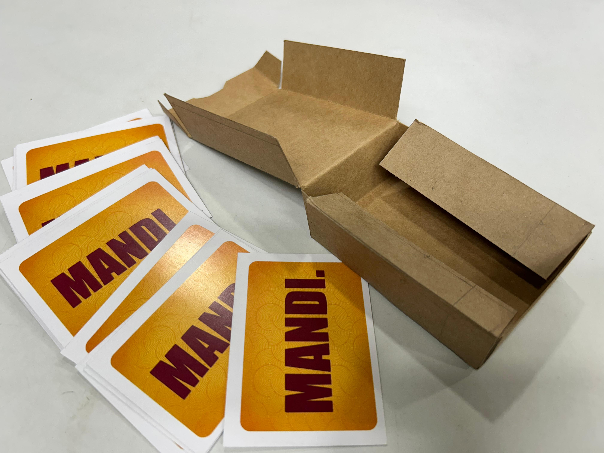
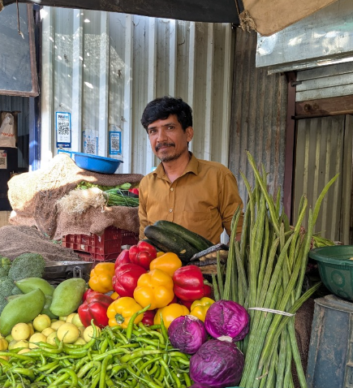
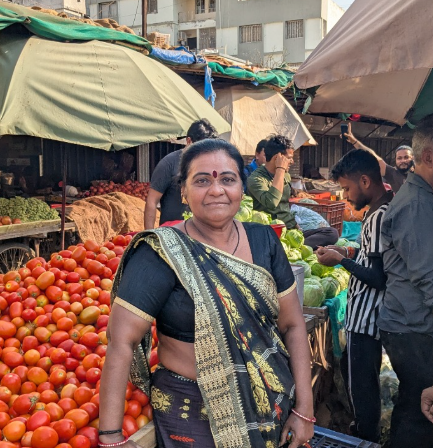
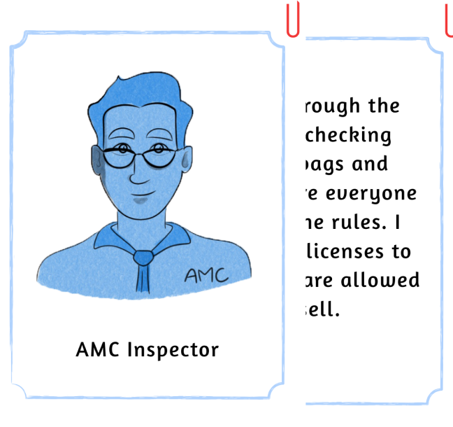
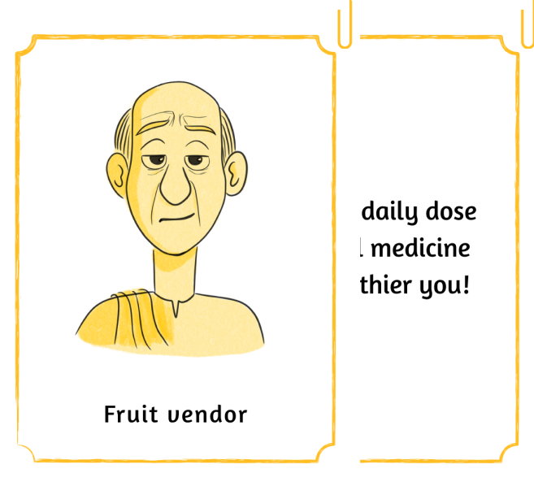
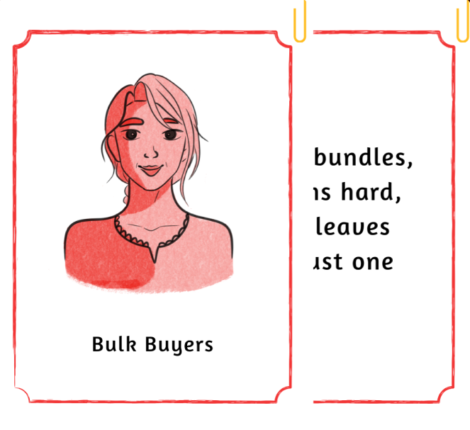
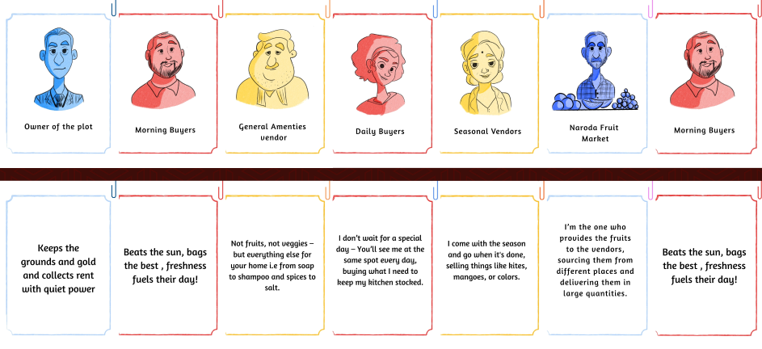
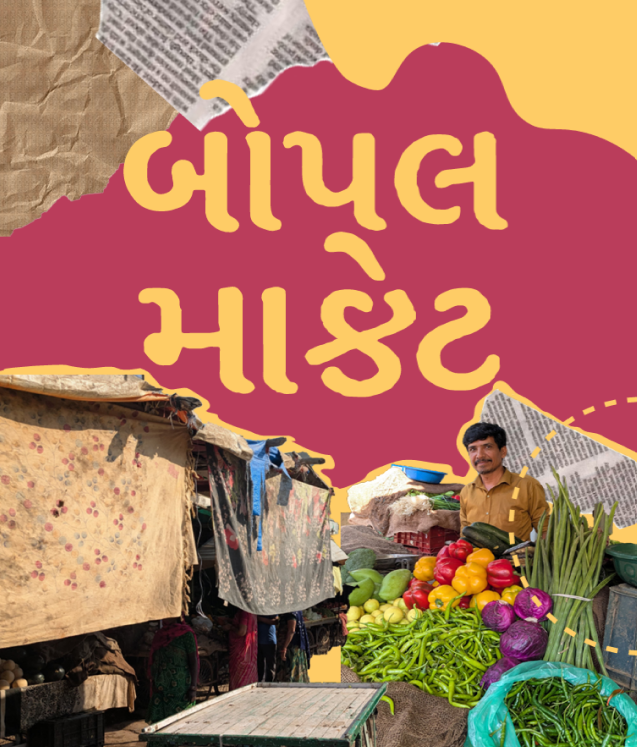

What if practising speech sounds felt like playing a card game instead of doing therapy?

The Bopal Vegetable Market, located near Bhavya Park in Bopal, Ahmedabad, is a private marketplace owned by a family of 10 brothers offering a wide variety of fresh produce. With over 100 vendors, shoppers can find an extensive selection of vegetables, fruits, and snacks at competitive prices. The market also provides parking facilities behind the market area.

How does the spatial layout and infrastructure of vegetable markets impact vendor operations, customer flow, user efficiency and the vendor and user experience?
We interviewed key market stakeholders, consumers, vendors and the plot owner to understand their lifestyles and current market conditions. The vendor highlighted challenges like congestion, heat and high rent, while the consumer valued fresh produce but noted disorganization and lack of shelter. Both emphasized peak crowd times and the need for better infrastructure and comfort.
Age: Approx. 45
Role: Fruit & Vegetable Vendor
Experience: 15+ years
Location: Stall within a private local market
Working Hours: 8:00 AM to 10:00 PM
Family Involvement: Family members assist daily
Supply Source: Fresh produce from Jamalpur Market, sourced each morning
Congestion: Cramped stalls and heavy footfall make movement tough during peak hours.
Seasonal Heat: Summer temperatures affect comfort and spoil produce faster.
Costs: Pays monthly rent; amenities maintained, but not always efficiently.

Vendor image
Consumer imageAge: Mid-50s
Occupation: Homemaker
Market Connection: Loyal visitor for over 15 years
Location: Lives nearby, walks or drives to the market
Shopping Frequency: Few times a week
Preferred Time: Afternoon to avoid peak crowd and finds easier parking
Congestion: Vendors sitting in pathways cause bottlenecks
Poor Infrastructure: No proper sheds; heat and rain make shopping uncomfortable
Navigation Issues: Lack of clear structure makes movement confusing and tiring
Mapping the stakeholders showed how vendors, suppliers and customers depend on each other. A decision made by one stakeholder can directly affect another. We mapped key stakeholders consumers, various vendors, the plot owner and external shopkeepers to understand their roles, behaviors, and challenges. Consumers highlighted price sensitivity, vendors shared operational struggles, the owner discussed maintenance and rent, while external shops emphasized visibility. This helped us uncover market dynamics and interactions influencing daily operations.
Visible stakeholders
Vendors, Owner of the plot, Security guard, Consumer, AMC inspector
Invisible stakeholders
Wholesaler/Suppliers, Jamalpur market, Kamod market, Fruit retailers at Naroda, TRP mall
Step into the chaotic, colorful world of the local vegetable bazaar, where every vendor, buyer and transporter plays a vital role. Mandi, is a strategy-based card game where players become market explorers, uncovering hidden connections between stakeholders and the information they hold.

SupplierSupplier: Those who offer goods or services for sale

FacilitatorFacilitator: Those who enable access or support the process without directly selling

CustomerCustomer: Those who purchase or request services or products
If you draw one of these cards, the person who has a matching card must say it out loud and the player with the match is bound to give it.
Players: 3–6 Setup: Each player starts with 3 Insight Cards and 2 Stakeholder Cards.
Goal: Be the first to complete all your Insight objectives through matches and trades.
Gameplay:
On your turn, draw 1 Character Card from the stack.
If it matches an Insight, announce the match and place it down.
If not, you may offer a trade: give an Insight Card to another player in exchange for
one of their Insight card. (if they’re willing).
Continue taking turns in this way.
Win Condition:
First player to complete all Insight matches they have (either by drawing or trading)
wins the game.

Gameplay image 1 Gameplay image 2
Gameplay image 2After consolidating all the information gathered throughout the project, I created a zine as a creative output that highlights the most important insights. The zine focuses on concisely presenting key aspects of my market research, translating complex findings into a visually engaging and easy-to-understand format.
Through this storytelling, I aimed to combine research with storytelling, making the information more accessible, interactive, and impactful

Zine image